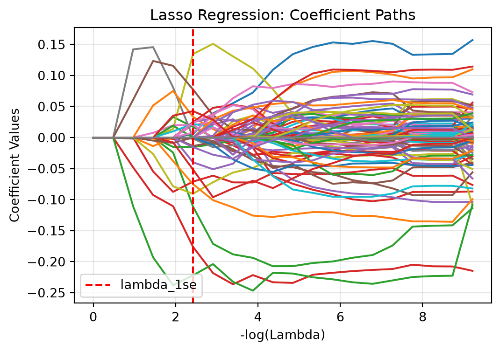

Rank = number of linearly independent columns (predictors) in a matrix.
Full rank = matrix is full rank if the rank is equal to the number of columns, or if every column is linearly independent.
7.2 Load Data & Inspect
The riboflavin.rds dataset was intended to be used in R, but was first converted into a CSV file for use in python. After converting the dataset, it was loaded into python and inspected.
The dataset has 71 observations and 4088 features. Next, the response variable y was extracted from the dataset and the predictor matrix X was created by dropping y and the sample ID. The shape of both were inspected for confirmation.
Show the code
# separate predictors and responseX = df.drop(columns=["Sample", "y"])y = df["y"]X.shape, y.shape
((71, 4088), (71,))
The result shows that the response vector y has 71 observations, while the predictor matrix X has 4088 features. Since the number of features exceeds the number of observations, it will be difficult to fit with a linear model.
7.3 Problem 1
Confirm that OLS cannot create a unique solution for this dataset. Attempt to fit a linear model using lm() and report what happens. How many coefficients does R return as NA, and why?
In python, the linear model can be fit using LinearRegression from sklearn.
Show the code
from sklearn.linear_model import LinearRegression# fit linear modelmodel = LinearRegression()model.fit(X, y)# inspect fitted coefficientsprint("Number of coefficients:", len(model.coef_))print("Intercept:", model.intercept_)
Number of coefficients: 4088
Intercept: 0.22058943050540503
This result confirms that a linear model was successfully fitted with 4089 coefficients, including the intercept. This is correct since the design matrix includes 4088 predictors and one intercept term.
However, since the number of predictors exceeds the number of observations, the model cannot produce a unique solution. This is due to the rank of the design matrix being less than total number of coefficients.
The rank of the matrix the number of linearly indepdendent columns and is defined by the following equation. \[
\text{Rank}(X) \leq \min(n,p)
\]
Where:
\(n\) = number of observations (rows)
\(p\) = number of predictors (columns)
The actual rank of the design matrix can be computed using the following code.
The rank deficiency is the difference between the total number of coefficients and the rank of the design matrix. The rank deficiency was computed to be 4018, which means that 4018 coefficients cannot be uniquely estimated.
7.4 Problem 2
Problem 2. Fit ridge regression using glmnet (alpha = 0). Select \(\lambda\) via 10-fold cross-validation. Report \(\lambda_{min}\) and \(\lambda_1se\). Plot the CV error curve with the two vertical lines. How does CV-MSE change as \(\lambda\) increases?
Below is the ridge regression penalty on the size of the coefficient vector \(\beta\). \[
\text{Minimize:}
\sum_{i=1}^{n}(y_i-\hat{y}_i)^2 + \lambda\sum_{j=1}^{p}\beta_j^2
\]
This penalty term shrinks the coefficients towards zero, which helps to reduce overfitting and improve model generalization. The strength of the penalty is controlled by the hyperparameter \(\lambda\). Larger \(lambda\) values result in greater shrinkage of the coefficients, while smaller values allow the coefficients to be closer to their ordinary least squares estimates.
The ridge regression was performed using the Ridge library from sklearn. Cross validation was performed using Kfold and cross_val_score. Lambda values were defined on a logarithmic scale from 10^2 to 10^4. 20 different lambda values were evaluated, logarithmically distributed within the scale.
First, the features were standardized using the StandardScalar library from sklearn. This library scales the features to have a mean of 0 and standard deviation of 1. This was done because \(\beta\) coefficients need to be on the same scale for the penalty term to be effective.
Show the code
from sklearn.linear_model import Ridgefrom sklearn.pipeline import make_pipelinefrom sklearn.model_selection import KFold, cross_val_scorefrom sklearn.preprocessing import StandardScaler# set up 10-fold cross-validationcv = KFold(n_splits=10, shuffle=True, random_state=5)# define lambda values to evaluatelambdas = np.logspace(2, 4, 20)
The StandardScaler is applied separately within each fold of the cross-validation within the pipeline.
Show the code
# initialize list to store cross-validation mean squared error (MSE)cv_mse = []# evaluate each lambda value. fit ridge regression model and calculate cross-validation MSEfor lam in lambdas: model = make_pipeline(StandardScaler(), Ridge(alpha=lam)) scores = cross_val_score(model, X, y, cv=cv, scoring="neg_mean_squared_error") cv_mse.append(-scores.mean())
Next, \(\lambda_{\min}\) and \(\lambda_{1se}\) were computed. These are defined as follows:
- \(\lambda_{\min}\) = Lambda value that produces the minimum cross-validation MSE.
- \(\lambda_{1se}\) = Largest lambda value with cross-validation MSE within one standard error of the minimum.
Show the code
# identify index of minimum cross validation MSEidx_min = np.argmin(cv_mse)# use index to find corresponding lambda and MSE valueslambda_min = lambdas[idx_min]mse_min = cv_mse[idx_min]print("lambda_min:", lambda_min)print("Minimum CV-MSE:", mse_min)
\(\lambda_{1se}\) was computed by re-running the cross-validation using the \(\lambda_{\min}\) value and calculating the standard error fo the cross-validation MSE across the 10 folds.
Show the code
# fit ridge regression at lambda_minmodel = make_pipeline(StandardScaler(), Ridge(alpha=lambda_min))scores = cross_val_score(model, X, y, cv=cv, scoring="neg_mean_squared_error")# calculate standard error across the 10 foldsse_min = np.std(-scores, ddof=1) / np.sqrt(len(scores))print("Standard error:", se_min)
Standard error: 0.0677654247710475
Then the one standard error cutoff value was calculated by adding the standard error to the minimum cross-validation MSE. The largest lambda value within this cutoff was identified as \(\lambda_{1se}\).
Show the code
# calculate one-standard-error cutoffmse_cutoff = mse_min + se_min# identify largest lambda within cutofflambda_1se = lambdas[np.where(cv_mse <= mse_cutoff)[0][-1]]print("lambda_1se:", lambda_1se)print("MSE cutoff:", mse_cutoff)
Finally, a plot of the cross-validation MSE was created with vertical lines for \(\lambda_{\min}\) and \(\lambda_{1se}\). The x-axis used a log scale to visualize the relationship between lambda and cross-validation MSE.
As \(\lambda\) increases, the cross-validation MSE decreases until reaching the minimum at \(\lambda_{min}\). After this point, the cross-validation MSE increases as \(\lambda\) continues to increase. This indicates that there is an optimal level of regularization to minimize the cross-validation MSE.
7.5 Problem 3
Plot the ridge coefficient path -\(log(\lambda)\) (a previous version omitted the negative sign) on the x-axis, coefficient values on the y-axis. Describe qualitatively what happens to the coefficients as \(\lambda\) increases. Does any coefficient reach exactly zero?
First, the ridge coefficients across the lambda grid were calculated and extracted.
Show the code
# initialize list to store ridge coefficientsridge_coefs = []# fit ridge regression for each lambdafor lam in lambdas: model = make_pipeline(StandardScaler(), Ridge(alpha=lam)) model.fit(X, y)# extract ridge coefficients ridge_coefs.append(model.named_steps["ridge"].coef_)# convert coefficient list to a numpy arrayridge_coefs = np.array(ridge_coefs)# inspect dimensions for verificationridge_coefs.shape
As lambda increases, the coefficient values decrease towards zero, but none appear to reach exaclty zero. This was verified using the code below.
Show the code
# count coefficients that are exactly zeronum_zeros = np.sum(ridge_coefs ==0)print("Number of zero coefficients:", num_zeros)
Number of zero coefficients: 0
This confirmed that none of the coefficients reached exactly zero.
7.6 Problem 4
Fit lasso regression (alpha = 1) and select \(\lambda\) via 10-fold CV. At \(\lambda_{1se}\), how many gene expression features are retained (non-zero coefficients)? Plot the coefficient path and the CV error curve.
This problem was solved in a similar manner to problem 2, but using lasso instead of ridge regression. The lasso penalty is defined as follows: \[
\hat{\beta}_{\text{lasso}}
=
\arg\min_{\beta}
\left\{
\sum_{i=1}^{n}(y_i-x_i^T\beta)^2
+
\lambda\sum_{j=1}^{p}|\beta_j|
\right\}
\]
\[
\|\beta\|_1 = \sum_{j=1}^{p}|\beta_j|
\]
The lasso penalty shrinks some coefficients to exactly zero, which allows for feature selection.
The lasso regression was performed using the lasso library from sklearn. Lambda values were defined on a log scale, similar to what was done for problem 2.
Show the code
from sklearn.linear_model import Lassofrom sklearn.pipeline import make_pipelinefrom sklearn.model_selection import KFold, cross_val_scorefrom sklearn.preprocessing import StandardScaler# set up 10-fold cross-validationcv = KFold(n_splits=10, shuffle=True, random_state=6)# define lambda values to evaluatelambdas = np.logspace(-4, 0, 20)
Next, the lasso regression was fit across the lambda grid and the cross-validation MSE was calculated.
Show the code
# initialize list to store cross-validation mean squared error (MSE)cv_mse_lasso = []# evaluate each lambda valuefor lam in lambdas: model = make_pipeline(StandardScaler(), Lasso(alpha=lam, max_iter=10000)) scores = cross_val_score(model, X, y, cv=cv, scoring="neg_mean_squared_error") cv_mse_lasso.append(-scores.mean())
Then the minimum cross-validation MSE and corresponding \(\lambda_{min}\) were identified.
Show the code
# identify index of minimum cross-validation MSEidx_min_lasso = np.argmin(cv_mse_lasso)# identify corresponding lambda and MSE valueslambda_min_lasso = lambdas[idx_min_lasso]mse_min_lasso = cv_mse_lasso[idx_min_lasso]print("lambda_min:", lambda_min_lasso)print("Minimum CV-MSE:", mse_min_lasso)
\(\lambda_{1se}\) was computed following the same procedure as in problem 2, by re-running the cross-validation using the \(\lambda_{\min}\) value and calculating the standard error for the cross-validation MSE across the 10 folds.
Show the code
# fit lasso at lambda_minmodel = make_pipeline(StandardScaler(), Lasso(alpha=lambda_min_lasso, max_iter=10000))scores = cross_val_score(model, X, y, cv=cv, scoring="neg_mean_squared_error")# calculate standard error across the 10 foldsse_min_lasso = np.std(-scores, ddof=1) / np.sqrt(len(scores))print("Standard error:", se_min_lasso)
Standard error: 0.06331383444979848
Then, the one standard error cutoff value was calculated and the largest lambda value within this cutoff was identified as \(\lambda_{1se}\).
Show the code
# calculate one-standard-error cutoffmse_cutoff_lasso = mse_min_lasso + se_min_lasso# identify largest lambda within cutofflambda_1se_lasso = lambdas[np.where(np.array(cv_mse_lasso) <= mse_cutoff_lasso)[0][-1]]print("lambda_1se:", lambda_1se_lasso)print("MSE cutoff:", mse_cutoff_lasso)
Finally, the lasso model was fit using \(\lambda_{1se}\) and the number of retained features were calculated.
Show the code
# fit lasso at lambda_1selasso_model = make_pipeline(StandardScaler(), Lasso(alpha=lambda_1se_lasso, max_iter=10000))lasso_model.fit(X, y)# extract fitted coefficientslasso_coefs = lasso_model.named_steps["lasso"].coef_# count non-zero coefficientsnum_retained = np.sum(lasso_coefs !=0)print("Number of retained features:", num_retained)
Number of retained features: 27
This confirmed that 27 features were retained, having non-zero coefficients. This demonstrates lasso’s ability to perform feature selection.
Next, the coefficients across the lambda grid were calculated and extracted for plotting the coefficient path.
Show the code
# initialize list to store lasso coefficientslasso_coefs_path = []# fit lasso for each lambdafor lam in lambdas: model = make_pipeline(StandardScaler(), Lasso(alpha=lam, max_iter=10000)) model.fit(X, y)# extract lasso coefficients lasso_coefs_path.append(model.named_steps["lasso"].coef_)# convert coefficient list to numpy arraylasso_coefs_path = np.array(lasso_coefs_path)
The lasso coefficients were then plotted for visualization. \(\lambda_{1se}\) is included on the plot to show where the which features are retained.
Show the code
# plot lasso coefficient pathsplt.figure(figsize=(6, 4))plt.plot(-np.log(lambdas), lasso_coefs_path)# add vertical line for lambda_1seplt.axvline(-np.log(lambda_1se_lasso), color="red", linestyle="--", label="lambda_1se")# format plotplt.xlabel("-log(Lambda)")plt.ylabel("Coefficient Values")plt.title("Lasso Regression: Coefficient Paths")plt.legend()plt.grid(True, alpha=0.3)plt.show()

Finally, the cross-validation MSE results were plotted for visualization, with vertical lines at \(\lambda_{min}\) and \(\lambda_{1se}\).
Fit an elastic net with \(\alpha\)\(\in\) {0.25, 0.5, 0.75}. For each \(\alpha\), record the minimum CV-MSE. Create a small table showing (\(\alpha\), \(\lambda_{min}\), \(CV-MSE\)). Which yields the lowest CV-MSE? How does the number of selected features compare to lasso?
The elastic net blends the ridge and lasso penalties, and the penalty term is defined as follows, with the first term being the lasso penalty and the second term being the ridge penalty. The \(\alpha\) parameter controls the balance between the two penalties. If \(\alpha\) = 1, the penalty is equivalent to lasso, while if \(\alpha\) = 0, the penalty is equivalent to ridge regression. \[
\text{Penalty} =
\lambda \left[
\alpha \sum_{j=1}^{p} |\beta_j|
+
\frac{1-\alpha}{2} \sum_{j=1}^{p} \beta_j^2
\right]
\]
First, the elastic net was fit across a grid of \(\alpha\) and \(\lambda\) values.
Show the code
from sklearn.linear_model import ElasticNet# define alpha values to evaluatealphas = [0.25, 0.50, 0.75]# define lambda values to evaluatelambdas = np.logspace(-4, 0, 20)
Next, the elastic net model was fit for each combination of \(\alpha\) and \(\lambda\), and the cross-validation MSE was calculated.
Show the code
# store results for each alphaelastic_net_results = []for a in alphas: cv_mse = []for lam in lambdas: model = make_pipeline(StandardScaler(), ElasticNet(alpha=lam, l1_ratio=a, max_iter=10000)) scores = cross_val_score(model, X, y, cv=cv, scoring="neg_mean_squared_error") cv_mse.append(-scores.mean())# identify minimum CV-MSE for this alpha min_idx = np.argmin(cv_mse)# store results for this alpha elastic_net_results.append({"alpha": a, "lambda_min": lambdas[min_idx], "CV-MSE": cv_mse[min_idx]})
Then the results were converted to a dataframe for display.
Show the code
# convert results to a dataframeelastic_net_df = pd.DataFrame(elastic_net_results)# display resultselastic_net_results
When \(\alpha\) = 0.75, it produced the lowest CV-MSE, making it the best of the three elastic net models evaluated.
Next, the number of features retained was calculated for each \(\alpha\) value.
Show the code
# store the number of retained featureselastic_net_features = []for result in elastic_net_results: model = make_pipeline(StandardScaler(), ElasticNet(alpha=result["lambda_min"], l1_ratio=result["alpha"], max_iter=10000)) model.fit(X, y)# count nonzero coefficients num_retained = np.sum(model.named_steps["elasticnet"].coef_ !=0) elastic_net_features.append(num_retained)# add feature counts to results dataframeelastic_net_df["Features Retained"] = elastic_net_featureselastic_net_df
alpha
lambda_min
CV-MSE
Features Retained
0
0.25
0.143845
0.220999
73
1
0.50
0.088587
0.214272
55
2
0.75
0.054556
0.210672
43
This result shows that for \(\alpha\) = 0.75, 43 features were retained. This is greater than the 27 features retained when using the lasso model. The features retained also decreased as \(\alpha\) increased. This makes sense because as \(\alpha\) increases, we are trending towards solely using the lasso model.
7.8 Problem 6
Fit PCR using the pls package (or manual SVD as shown in the chapter). Select the number of components \(k\) via cross-validation (use validationplot). Report the optimal \(k\).
7.8.1 Part a.
Back-transform the PCR fit to obtain the full 4,088-dimensional coefficient vector \(\hat{\beta}_{\text{PCR}}\).
7.8.2 Part b.
Use \(\hat{\beta}_{\text{PCR}}\) to generate a prediction for the first observation in the dataset (X[1, ]). Show your R code and the predicted value.
7.8.3 Part c.
In one sentence, explain why you needed all 4,088 gene expression values to generate this prediction even though you only fit principal components.